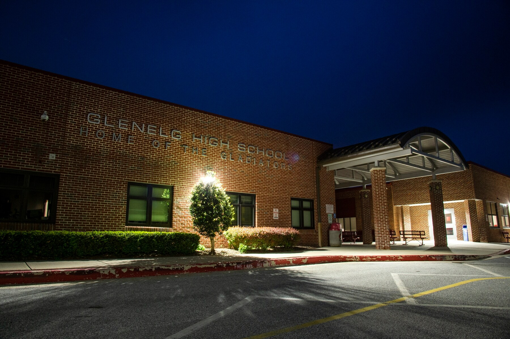

The principal saw a swastika first. It was inky black,
spray-painted on a trash can just beside the entrance to the high school. David Burton switched
off the engine of his SUV, unaware, even then, of the magnitude of what he was about to see.
This was the last day of the year for the Class of 2018 at Glenelg High School. There was going
to be an awards ceremony, a picnic, that end-of-a-journey feeling that always made Burton so
proud of his job. But as he was on his way to work at 6:25 a.m., the assistant principal had
called, agitated and yelling about graffiti. “It’s everywhere,” he kept saying, so Burton had
leaned on the gas and rushed the last few miles.
Soon, everyone would be telling him how shocked they were. This was Howard County, after all: a
Maryland suburb between Washington and Baltimore that is extremely diverse, extremely
well-educated and home to Columbia, a planned community founded on the principles of integration
and inclusion. People moved their families here for that reputation just as much as for the good
schools.
“Pleasantville,” Burton liked to call it, but as a black man, and as the principal of the
county’s only majority-white high school, he knew this place was more complicated. When he
stepped out into the bright spring day, he confronted the reality of just how much more.
Beneath his dress shoes, there were more swastikas. Spray painted around them were crude
drawings of penises.
Then Burton saw the letters “KKK.” He saw the word “Fuck” again and again next to the words
“Jews,” “Fags,” “Nigs” and “Burton.”
He kept walking, following the graffiti around the building’s perimeter. It was on the
sidewalks, the trash cans, the loading dock, the stadium around back. There were more than 100
markings in total, though he didn’t bother to count.
He turned a corner and saw something written in large capital letters on the sidewalk: “BURTON
IS A NIGGER.”
He paused only for a moment, looking at the words, trying to comprehend that all of
this was real.
Later, school district officials, county administrators and prosecutors would have a name for
what happened here. They would repeat it, condemn it and vow to prevent it from occurring again.
Hate crime.
The phrase has become inescapable as hate-fueled incidents have spiked across the country. A
quarter of all hate crimes reported to the FBI, more than any other category, are similar to the
attack discovered at Glenelg on May 24, 2018. Vandalism and destruction of property, a physical
marking of an age-old threat: You don’t belong here.
The majority are repaired, washed away or painted over without anyone arrested. When the
perpetrators are caught, they are rarely charged with a hate crime. Here, there would be
consequences, and with them, a division between those who wanted to confront the racism in their
midst and those determined to explain it away.
But first, Burton, 50 years old and dressed in one of his best black suits, would walk back over
the graffiti, retreat into his office, close the door and pray.
His staff scrambled to cover the spray paint with tarps, carpet pads, anything they could find.
The maintenance team searched for a sandblaster. But there was too much to cover and too little
time before the students and parents began arriving. The seniors were wearing red caps and
gowns, ready for their awards ceremony. Everyone was directed to alternative entrances, away
from the worst of the damage. But photos of the graffiti were already being texted, emailed and
Snapchatted.
In the auditorium, Imani Nokuri looked for her family, who had come to see her perform the
national anthem. She was one of fewer than 20 black students in the class of more than 260
seniors. She and her younger sister, a freshman at Glenelg, had been rapid-fire texting all
morning, comforting each other. But when Imani saw the look of deep concern her grandmother gave
her, she forced a smile onto her face. “It’s okay,” she promised. “I’m fine.”
In the central office, teachers who had led diversity and empathy training for students were
crying. Police were arriving, asking to see security footage. Phones were ringing with calls
from reporters. Photos of the damage were about to be broadcast on TV, making their way into
homes across the region.
In one of those homes, 72-year-old Susan Sands-Joseph was watching. She knew Glenelg well. She
was one of the first black students to attend the school after desegregation. Suddenly, all the
memories that she tried not to dwell on were dredged up again: the words she was called, the
tomatoes thrown at her head, the looks her parents gave her when she came home saying scalding
hot soup had been pushed into her lap again. “It’s okay,” she had promised them. “I’m fine.”
By the time the awards ceremony was about to begin, Principal Burton had rewritten the speech he
had been planning to give. “We are not going to let this ruin your celebration,” he would now
tell students.
He emerged from his office with notes clutched in his hand and stopped to check in with
the police. The security footage, they told Burton, confirmed what he had suspected.
The principal entered the auditorium to a burst of applause. He stepped up to the podium. He
stood before his students, looked out into their faces and felt certain: The people who did this
were looking back at him.
-Seth Taylor, one of the four students
Seth Taylor tipped his head down so his graduation cap would block
his view of the podium. It felt, he said later, like the principal was staring right at him. But
he and the others had hidden their faces behind masks the night before, Seth reminded himself.
How could anyone know they were the ones who had done it?
All morning, he had been replaying the vandalism in his mind. He’d been at his buddy Matt Lipp’s
house, where the parents of all their friends had gathered the evening of May 23 to sort out the
details of Senior Week. The teens’ parents had rented them a house in Ocean City, the annual
destination for thousands of local students celebrating graduation, and were divvying up tasks:
who would drive the group to the beach, who would stock their fridge, who would cook them
dinners before leaving them for a week of beer pong, sunburns and meetups with houses full of
girls.
Afterward, Seth stayed to watch a Washington Capitals playoff game. He loved these kinds of
nights and, really, everything about high school. Cheering crowds at his football and baseball
games, late-night Xbox sessions, fishing trips, parties in their parents’ basements. He could do
without the academic part — he was a B student, at best — but he was planning to join the Army
Reserve and maybe go to community college.
With him at Matt’s was Josh Shaffer, a hockey player he’d been friends with since seventh grade,
and Tyler Curtiss, the baseball team captain who had been homecoming king and prom king.
Matt and Josh declined interview requests, but Seth and Tyler agreed to talk to The Washington
Post about the vandalism. When they tell the story of that evening, they start with the end of
the Caps game, when everyone but Seth was deep into a supply of Bud Light, and the conversation
turned, once again, to their senior prank.
Tyler wanted to superglue locks. Seth suggested they grease up three pigs and release them into
the school.
Or, somebody said, they could go spray paint the words “Class of 2018.”

The exterior of Glenelg High School in Howard County, Maryland. (Will Newton for The Washington Post)
Within minutes, they were driving to the school with spray paint from Matt’s parents’ garage.
They parked at the church next door, tied T-shirts into masks over their faces and sprinted
through the woods.
A shake of the can, the smell of fumes. The words went down easily, just as they had planned:
“Class of 2018,” they wrote across the sidewalk.
And then Seth watched as Josh wrote something else: “BURTON IS A” it began.
Later, this was the moment he agonized over — the point at which he could have turned back. “I
wish I said something, like, ‘This is stupid, guys. It’s not worth it. We could actually get in
trouble for this.’”
Why he didn’t, he would always struggle to explain: “I don’t know. Everyone was doing it. We
didn’t realize the consequences.”
“It was just spray paint. It just happened. It is all a blur.”
The blur went on for about seven minutes, during which all of them sprayed something hateful.
Josh targeted the principal. Matt attacked Jewish, gay and black people. Tyler drew two
swastikas. Seth drew swastikas, “fags” and “KKK.”
When a car drove by, they leaped behind the brick columns near the front entrance, hiding. A
moment later, they started spraying again.
Finally, they ran back to their cars. They chucked their paint cans in the woods. They swore to
each other that they would never admit what they did.
Seth came home to a quiet house. His sister was away at college, his father was on a business
trip, and his mother was asleep. He went to the fridge and found the breakfast she had made for
him to eat the next morning. Seth popped the eggs into the microwave. When he went to grab them,
the plate slipped. The hot eggs tumbled onto his arms and legs. The shock somehow made it hit
him. What had he just done?
Panicked, he started Googling:
“How long do you go to jail for vandalism?”
And then: “Can you get a hate crime for painting swastikas?”
Now he was sitting in the Glenelg auditorium, thinking about what he’d told his mom. Early that
morning, she’d received an email from the school informing parents about the graffiti.
Horrified, she texted Seth, warning him what he would find when he arrived at the awards
ceremony.
“Who would do that?” he had texted back.
And in a sense, he meant it. He had already begun to separate what he’d done from who he
believed himself to be. He hadn’t intended to hurt anyone, he said. He would always maintain he
wasn’t an anti-Semite, a homophobe or a racist.
From the podium a voice said: “Tyler Curtiss.”
Seth looked up. His friend was walking toward the stage. But Tyler wasn’t getting in trouble. He
was accepting an athletic leadership award. He was walking across the stage and shaking the
principal’s hand.
Seth felt a tap on his shoulder. The athletic director was standing over him. “Seth,” he said
quietly. “You need to come with me.”
Seth followed him out, trying not to look at his classmates. On the other side of the auditorium
doors, two police officers were waiting to take him to the office of the school resource
officer, Steve Willingham.
On the TV screen inside was security footage from the night before. Seth could see his own stout
frame, paint can in hand, frozen in high definition.
“I bet you don’t want to see that, do you?” he remembers Willingham saying.
“No,” Seth answered.
“Do you know why you’re in here?”
“Yes,” Seth said. He didn’t know then that the officers had been strategic in pulling him out
first. Willingham had coached Seth’s sister in soccer. He was friends with Seth’s dad. He
suspected that of all the boys, Seth was the most likely to confess.
It took only one question: “What happened?”
“Things got out of hand,” Seth recalls telling him. “I was under the impression we were going to
do a prank, and it got bad.”
He started to cry. He would be the only one who immediately admitted what they did. The others,
court records show, would deny it. Tyler wished Willingham good luck in finding out who did
it.
Eventually they were told: The school’s WiFi system requires students to use individual IDs to
get online. After they log in once, their phones automatically connect whenever they are on
campus.
At 11:35 p.m. on May 23, the students’ IDs began auto-connecting to the WiFi. It took only a few
clicks to find out exactly who was beneath those T-shirt masks.
“You have the right to remain silent,” an officer said to Seth before long. “Anything you say or
do . . . ”
They told him to remove his graduation cap and gown. They cuffed his arms behind his back.
Seth realized they were about to march him outside, past the windows of the cafeteria. By now it
would be filled with students eating lunch.
“Can you cover my face so that the kids don’t videotape me?” he asked.
“No,” an officer replied. “You deserve this.”
Pictured: Seth Taylor, left, and Tyler Curtiss, right. (Will Newton for The Washington Post)
By the end of the day, charges had been filed. Not just vandalism
and destruction of property, but a hate crime. Prosecutors believed the young men had committed
their acts with animosity toward protected groups — and that they could prove it. In Maryland,
that meant that the punishment could be intensified. It meant they were looking at up to six
years of incarceration.
Before they were released from jail that night, the four students watched on a small TV screen
outside their holding cell while their crime was broadcast on the local news — as it would be
over and over in the coming days. Viewers saw four white teens, scowling at the camera, and the
school system’s superintendent vowing at a news conference to hold them accountable.
“Howard County stands out as a place where diversity and acceptance are cherished,” Michael
Martirano said. It sounded like something any superintendent would say. But here, many knew, it
came with a story: one taught to children in school, bragged about to visitors and proclaimed on
signs.
In the early 1960s, before the Fair Housing Act and the legalization of interracial marriage in
Maryland, a white developer named James Rouse began purchasing huge swaths of Howard County
farmland to build a planned community named Columbia.
He envisioned it as a mixed-race, mixed-income utopia. “The next America,” he called it, and
although racial tensions could never be completely erased, to many people, that is what it
became. Today, the suburb — home to a third of the county’s 300,000 residents — is renowned for
its ethnic diversity, interracial marriages, interfaith centers and high-achieving schools. It
appears frequently on national “Best Places to Live” lists.
Most are unaware of the history that came before Columbia. The farmland Rouse purchased included
former slave-holding plantations. An estimated 2,800 people were enslaved in the county at the
beginning of the Civil War. A century later, when the Supreme Court ruled in Brown v. Board of
Education in 1954 that schools must be desegregated, Howard County was so resistant that it took
more than a decade for the black-only school, Harriet Tubman, to close its doors. The opposition
to black students learning alongside white ones was so fierce, a cross was burned. It happened
outside a school dance at Glenelg High School.
Glenelg is in western Howard, the most rural part of the county, then and now. While the rest of
Howard’s high schools have no racial majority, 76 percent of Glenelg students are white.
On the news that night, though, only students of color were interviewed.
“It’s just a small number of students who decide to make these decisions that negatively impact
the image of our school,” one said.
“This is not representative of what Glenelg stands for,” said another.
That week, after Seth, Tyler, Matt and Josh were released from jail without having to pay bail,
their classmates began to argue over whether those statements were true.
Tyler Hebron, a senior who was president of the school’s black student union, typed her feelings
into an Instagram post. “It shouldn’t have taken this event to occur for us to observe the
hateful actions of our peers,” she remembers writing. “We shouldn’t say we are surprised. We are
not.”
During her freshman year, a student flew a Confederate flag at a football game. Swastikas were
scratched into the bathroom stalls. In 2017, someone had written the n-word and Principal
Burton’s name on a baseball dugout. She had heard boys play a game to see who could yell the
n-word the loudest. To her, this crime was just high-profile proof of the hostility she had
always felt.
Soon, comments started appearing beneath her Instagram post.
“You’re racist,” one said. “All you do is blame straight white males.”
The night before graduation, she found herself thinking about whether she should pack pepper
spray in her purse. She wasn’t sure, she told her parents, that she felt safe.
Among black families like hers, there were doubts that the white teens would face the kind of
punishment black teens receive for similar crimes. Two years earlier, a group of students had
painted swastikas on a historic black schoolhouse in Northern Virginia. A Loudoun County judge
sentenced them not to jail time or community service, but to reading: along with visiting the
Holocaust museum, each had to choose a single book about Nazi Germany or the Jim Crow era and
write a report on it.
Two black families came to Burton and told him they were pulling their kids out of Glenelg
before the next school year. The principal tried to persuade them not to go.
But in his own house, his wife, Katrina, was wondering if he should leave, too.
They had two daughters to think about, an eighth-grader and a senior at another Howard County
high school, who on the day of the hate crime had come home and collapsed in her mother’s arms,
sobbing. Katrina knew about the parents who warned Burton not to talk about the incident in his
speech at the graduation ceremony, and watched as some of them refused to stand and clap for him
that day.
“Are you safe?” she kept asking her husband.
David Burton since 2016 has led Glenelg High School, where just 5% of the student body is Black. (Will Newton for The Washington Post)
There had been so many incidents in his life that had made Burton question just that. When he
was 16, and the parents of a white friend in his Michigan hometown called him the n-word. In
college, when he and his fraternity brothers were pulled over and questioned by a group of white
cops seemingly for no reason. At a convenience store in South Carolina just a few years ago,
when a hostile clerk refused to serve him and his family.
But inside a school, he was an authority figure, the man in charge. For most of his career, he’d
led schools in Prince George’s and Howard counties filled with students of color.
And then to his surprise, he was asked in 2016 to leave Howard County’s Long Reach High School,
where a third of the students are black, and take over at Glenelg, where less than 5 percent are
black. Here, he suspected, it would take time to win over the community.
He started standing in the halls every morning and every class break, looking students in the
eye as he said hello. He attended as many games and plays and art shows as he could. He made
sure the swastikas scratched in the bathroom were documented and investigated, but quietly, to
avoid giving those who drew them the attention they were seeking.
After two years, he felt that he had earned the respect of this place, and these people. They
welcomed him when he arrived at the annual end-of-the-year celebration for the senior class at
an Ellicott City resort. Parents gave him hugs and thanked him for what he had done for their
kids.
That night, he learned that one senior had been caught trying to order alcohol at the bar. The
student was kicked out of the event, but the next day, Burton decided he didn’t want to be
overly harsh in his punishment.
“Even though you did this, I am going to allow you to go to the school picnic,” he told the
teen.
Less than a week later, it was the same student, Josh Shaffer, who would scrawl Burton’s name
and the n-word onto the sidewalk.
“The person you married is not about to cower,” the principal told his wife. He wouldn’t be
leaving Glenelg.
He could use the summer, he thought, to plan what he was going to do the following school year,
the message he needed to send.
And if the prosecutors sought his help in holding his students accountable, he knew what his
answer would be.
-Seth Taylor
Every time Seth walked from the parking lot of the Howard County
Circuit Court to its entrance, he passed a small, decaying building with barred windows and a
slanted roof. He rushed by with his head down, passing a plaque that explained the structure's
history. Here, slaves who'd tried to run to freedom were held before being returned to the
people who owned them.
In late March, Seth entered the courthouse dressed in one of his father’s suits, accompanied by
his parents. It was his final appearance in front of the judge overseeing all four Glenelg
cases: William V. Tucker, a black man known for his interest in the way the criminal justice
system handles young people.
One by one, they had come before him and pleaded guilty, or been found guilty after agreeing to
a statement of facts.
Two of them had tried to have the hate-crime charges dismissed. Their attorneys claimed that
their First Amendment rights were being violated. They could be punished for the vandalism, the
argument went, but not for what they wrote.
It didn’t work.
Now, it was Tucker’s job to answer a question the community had been debating for nearly a year:
What consequences did these young men, now 19, deserve?
They hadn’t been allowed to walk at graduation. Their post-high-school plans had been derailed,
and they were working in landscaping, asbestos removal and, in Seth’s case, office furniture
construction. Their names and mug shots were seared into Howard County’s memory and the
Internet’s search results. It was up to Tucker to decide whether, on top of that, they should
spend time in jail.
His view became clear when Joshua Shaffer was the first to be sentenced on March 8, 2019. Seth
stayed home and kept refreshing his Internet browser, waiting for news. Finally, the local TV
station published a video: Josh was being walked out of the courthouse in cuffs. He had been
sentenced to three years of probation, 250 hours of community service and 18 consecutive
weekends in Howard County Jail.
Seth’s parents called his attorney, Debra Saltz, in a panic. His case was different, she
reminded them. He was different. They just had to persuade the judge to see that.
Saltz stood in court that March morning and pointed to her client.
“Your honor, I truly believe justice and mercy call on us to consider who he is,” she said. “And
I believe it requires the court to consider what has happened in his life, what he has done
since May 24.”
Seth, she explained, had been working to make amends. He’d completed 181 hours of community
service. He’d written an apology letter to Principal Burton. He’d visited the Holocaust Memorial
Museum in Washington and volunteered at the Jewish Museum of Maryland. He’d spent time with an
African American pastor and attended regular diversity training with an African American
counselor.
He did it all with the support of his parents, who had spent the year agonizing over how their
son could have done something so heinous. Seth’s father, Scott Taylor, stood to tell the judge
he blamed himself.
“The letters ‘KKK’ were painted on the school. Seth didn’t understand the pain, suffering and
terror associated with those letters, because I never told him,” the father said. “I never told
him how the Klan used to collect money after church in my neighborhood when I was growing up in
the South, and how they would stand in the road like the fire department.”
“I’ve come to realize I did fail,” he continued. “It’s not what I said in my home; it’s what I
didn’t say.”
When it was Seth’s turn to speak, he assured his parents that it was not their fault.
“You taught me better,” he said. “This isn’t who you raised.”
He apologized to the principal and to the communities he hurt.
“It was the worst decision I have ever made in my entire life. What I did there keeps me up at
night. I deserve whatever punishment I get,” he said. “I have worked hard since that day to show
my family, my school, my community and Principal Burton how sorry I am.”
Seth said he just wanted all of them to understand: He is not a racist.
Later, he would explain himself this way: “I never really understood the symbol of the swastika.
I knew it was wrong to plaster it somewhere. I didn’t learn exactly what [the Nazis] were doing
to the Jews until I went to the Holocaust Museum. I never learned that they were mutilated. I
knew that they were, like, burned. But I never learned that they had experiments done on them,
were injected with diseases. The school didn’t include that. They just included the burning and
the train cars.”
His understanding of the KKK was limited, too, he said. “Some people think it’s just a word, or
a symbol or three letters put together. . . . But they were lynching people, hurting people for
no good reason.”
Now, he said, he knows. But he still doesn’t believe his actions that night make him a bigot.
“I spray paint one racist thing and, suddenly, I become a racist? Just because I did it doesn’t
mean I hate Jews, gay people or black people.”
He was standing before the judge, pleading guilty to a hate crime, but he would not admit that
he harbored any hate.
All around him, the adults agreed.
“He will forever be known as the racist kid at Glenelg, but that’s not who Seth is,” his father
said in court that day.
“I told him that his act was racist, but don’t let it define him as a racist. He can and I pray
that he will go on and do better,” Maxwell Ware, the African American pastor he met with, wrote
in a letter supporting him.
“He is not a racist . . . he has a good heart,” his attorney told the judge.
Behind her, Principal Burton was listening. He’d heard Joshua Shaffer’s attorney give a similar
speech. When Matthew Lipp was sentenced, he would hear it then too. Tyler Curtiss had written it
in a Facebook apology the day after the crime. Tyler, Burton knew, had turned to Jesus, joining
a church where he talked openly about the swastikas he painted that night. He had spent months
telling his story to Jewish congregations, interfaith groups and the county’s board of rabbis.
Come the day of his sentencing, Tyler would say: “I hold no hatred toward any human being,
especially those in the communities that were affected.”
They all believed it was possible to do what they did without really meaning it.
Burton wanted to look them in the eye and say: “You did something very racist. How you don’t
think you’re a racist, I don’t know.”
What he did know was what they’d been taught in school: Glenelg covered the Holocaust and the
Klan in detail, in U.S. history and American government and world history and in the books they
read for language arts.
He believed what possessed them to draw those words and symbols that night wasn’t a lack of
knowledge, but something deeper, something ugly, something taught to them, consciously or
unconsciously, along the way. If they couldn’t admit that now, maybe they never would. But it
wasn’t his responsibility to educate them any more.
When it was Burton’s turn to speak at Seth’s sentencing, he didn’t say the word “racism.” He
talked about all the people the crime had affected — the teachers crying in his office, the
parents who pulled their kids out of his school, his daughter in tears, and for just a few
moments, himself: “I know I give up my time, my effort, I give up my life for my students,” he
said. “I think the only thing I am asking in return is just a little bit of respect.”
The courtroom waited in silence for Judge Tucker to reach his decision. Seth kept his gaze on
the table. His father rubbed his mother’s back.
“I appreciate the fact that you are now trying to show that you are not a racist, that you
committed a racist act,” Tucker finally told Seth. “But part of what I need to do is punish you.
So the sentence is going to be as follows.”
Three years probation. Two hundred fifty hours in community service. And nine consecutive
weekends in jail.
“A normal weekend incarceration is Friday 6 p.m. to Sunday 6 p.m.,” Tucker said. It was a
Thursday. “For this weekend, it begins today.”
A black sheriff’s deputy stepped behind Seth and pulled out her handcuffs. His mother began to
cry.
“Alright, Mr. Taylor, good luck to you,” the judge said, and the metal closed around Seth’s
wrists.
Six weeks later, Seth backed his car out of his parents' driveway,
headed to his final weekend in jail.
Good behavior during his weekends locked up meant he had to serve only two-thirds of them.
The following weekend, Tyler Curtiss, who had painted two swastikas, would finish his weekends,
five in all.
Matt Lipp, whose graffiti attacked Jewish, black and gay people, would serve 11 of the 16 he was
sentenced to. He has filed an appeal, still arguing that his First Amendment rights had been
violated.
Josh Shaffer, who targeted the principal, was sentenced to the most jail time: 18 weekends. He
would serve 12.
All four could become eligible to get the hate crimes expunged from their record when their
probation is finished.
Together they had figured out how to navigate their 48-hour stints locked up: how to make the
time pass, how to hide their toilet paper so it wouldn’t be stolen, what to do when the other
inmates threw dominoes at their heads.
Seth didn’t know the names of the people who gave them trouble, but he had nicknames he made up
for them. “String Bean,” for the tall, lanky one. “Pistachio” for the one with the mustache.
“Two black kids who just do not like us,” he called them.
Now he drove past the high school, yawning as he turned toward the highway. He’d been up late
the night before, playing Mortal Kombat with strangers on his Xbox. He felt comfortable there,
behind the anonymity of his username. He didn’t feel that way anywhere in Howard County. He grew
nervous anytime he saw a person of color, wondering if they recognized him and knew what he had
done.
He didn’t think anyone would recognize him come Monday, when he was going to start a new job in
a heating and cooling apprenticeship program an hour away. It was going to pay $14 an hour. If
he liked it, he might get his HVAC license. And then in three years when his probation was over,
he thought he might move to Florida. Do some fishing. Start over.
He pulled into the jail parking lot 20 minutes early, switched off his engine and pulled out his
phone. He turned on Kodak Black, who started rapping about “nigga s---.”
A truck pulled up beside him and Seth rolled down his passenger window.
“Hey,” he called to Josh. The two were the only ones in the group who had stayed close friends.
During the week, they went to the gym together late at night, when they wouldn’t see other
people.
“You ready to play three hours of checkers?” Josh asked.
“I’m finding a book, man,” Seth said. “I can’t play Uno again. I’m never playing Uno again in my
life as soon as I leave this jail.”
Josh pulled out a can of tobacco dip. Seth took a hit from his strawberry-flavored Juul. They
sat there until Josh said, “You ready?” and then Seth followed him inside.
Students brought a tractor carrying a sofa and flying a Trump flag to Glenelg High's parking lot the Class of 2019's graduation ceremony. (Doug Kapustin for The Washington Post)
The principal steered into the high school lot a month later and
parked in the same spot he had a year before. He stepped out of his SUV in one of his best black
suits. It was the last day of school for the class of 2019.
Once again, there was going to be an awards ceremony and a picnic, but this year, there was no
graffiti waiting for him.
In the weeks since his former students were sent to jail, he and his wife had been asked again
and again what they thought of the punishment. People were outraged — either that the young men
had received a “slap on the wrist” or that they had been so persecuted. Burton wouldn’t take a
side. “To me, it felt like a crime,” he said. “But what happens because of that crime is not up
to me to figure out.”
He had to focus on his 1,200 current students: the LGBTQ kids who still felt isolated. The
Jewish girl who told the local paper she still wishes she could transfer. Whoever was still
scrawling swastikas on the bathroom stalls.
In the past year, he’d created a task force of diverse students to work on the school’s climate.
Soon every freshman would go through an empathy workshop. And nearly 40 of his employees had
spent the year meeting to discuss the book “Waking Up White,” a memoir of a white woman who
comes to understand that racism is a system that she had been shaped by and contributed to her
entire life without even realizing it. Maybe, he thought, that lesson would get passed on to
Glenelg’s students.
But on this morning, his job was to celebrate his seniors. He stood outside as they arrived in
their red caps and gowns. Their parents and grandparents followed behind, cameras in hand.
Then he saw it: this year’s version of a senior prank. A tractor was pulling into the parking
lot. On the front was an old couch bolted to the forklift, a sign that read “2019,” and a few
students sprawled on the cushions. On the back was a blue flag. “TRUMP,” it read, “MAKE AMERICA
GREAT AGAIN.”
The assistant principal set off after them, and Burton decided to let him handle it. Instead he
made his way to the auditorium. He stepped up to the podium, looking out at his students’ faces.
Then their names were called, and they came on stage to shake his hand.

About this story
Jessica Contrera is a
reporter on The Washington Post's local enterprise team. She has written about Generation Z,
workplace sexual harassment and people from across the country whose lives are being shaped by
issues in the news.
Editing by Lynda Robinson. Photos by Will Newton and Doug Kapustin for The Washington Post.
Photo editing by Mark Miller. Copy editing by Todd Kistler. Design and development by Junne
Alcantara.
This story has been reproduced as part of coursework for the Philip Merrill College of
Journalism at the University of Maryland, College Park. It was originally publised by The
Washington Post on July 9, 2019. Click
here
to read the original story.